1、项目差异
1.1 项目概述
1.1.1 易语言项目概述
易语言采用的是单文件单项目的管理模式，项目文件后缀名为“.e”，一个易语言源码文件就代表一个易语言项目，源码中所引用的图标资源，声音资源等资源文件都会打包到易语言源码中，无需额外管理。
1.1.2 火山项目概述
火山视窗的项目管理模式和易语言完全相反，火山采用的是多项目多文件的管理模式，并且火山所引用的任何资源文件也不会打包到源码文件中，减少源码文件负担。
多个项目建立在一起的集合被称为解决方案，一个解决方案内可以放N个项目，一个项目内可以有N个火山源码文件，源码后缀文件为“.v”。
这样的模式有很多好处，譬如：开发一款软件要升级多个版本，想保留历史版本的源代码，那么就可以都把这些历史版本的源代码放在一个解决方案中便于后期维护和管理，想要查看历史版本源码也非常方便，不需要额外打开一个新的火山窗口，而在易语言中你必须要打开一个新的易语言窗口才能查看旧版源码。
1.2 项目创建差异
1.2.1 易语言项目创建
在易语言中可以创建“Windows空白程序”项目以及“Linux空白程序”项目。
Windows空白程序提供了四个项目模板，分别为：Windows窗口程序、Windows控制台程序、Windows动态链接库以及Windows易语言模块。
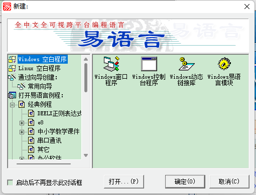
Linux空白程序提供了两个项目模板，分别为：Linux控制台程序和Linux易语言模块。
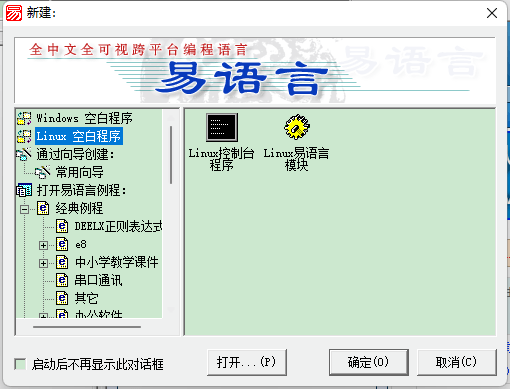
1.2.2 火山视窗项目创建
创建一个新的项目时会自动依赖一个解决方案，如下图所示进行创建：
(1) 可通过“文件 -> 新建 -> 项目”或直接点击欢迎页中的“新建项目”都可以实现创建项目。
(2) 根据自己的需求选择平台及目标平台的项目模板，并依次填写项目名称、选择所处(保存)位置、解决方案名称，最后点击确定即可。
注1：因火山视窗只针对Windows程序开发，因此新建项目的时候无法在视窗平台中创建并使用Linux项目。
注2：除此之外窗口程序、控制台程序、动态链接库都可以进行创建并使用，额外还提供了Windows服务程序等多个不同类型的模板。
(3) 如果“所处位置”不存在会提示进行创建，点击“是”进行创建即可。
(4) 最后创建成功后如下图，其中解决方案/项目/源文件名称都可以通过双击进行修改。
1.3 火山项目详细介绍
1.3.1 解决方案目录结构概述
在创建了一个项目后，会在“所处位置”目录中生成“解决方案文件”和“项目文件夹”。
注：这些生成的项目文件或文件夹不允许随意修改其名称，否则会导致项目无法打开。
(1) 解决方法文件后缀名为“vsln”，启动火山视窗项目时，双击此文件即可打开。
(2) 项目文件夹中存储有当前项目源码数据。
打开项目文件夹，可以看到一个“src”的文件夹和后缀名为“vprj”的项目配置文件。
(1) 项目配置文件中存储有当前项目所有配置信息。
(2) 自动生成的主程序模板文件，位于src文件夹中。
打开src文件夹就可以看到自动生成的主程序模板文件。
当程序进行调试或编译发布版时，会自动在解决方案所处目录中，生成一个“_int”文件夹，用于输出C++源码文件和项目程序文件。
程序文件默认输出路径如下：
调试版程序默认输出在：“_int\项目文件名\debug\x64(或win32)\linker”目录中。
发布版程序默认输出在：“_int\项目文件名\release\x64(或win32)\linker”目录中。
注：x64指64位程序，win32指32位程序。
“_int”文件夹可以自定义其保存位置，通过右键解决方案选择属性菜单，通过设置“编译中间数据目录”即可自定义位置。
1.3.2 多文件管理
如果软件中有多个窗口，可以建立多个火山源码文件，一个文件中存放一个窗口类，可便于后期软件维护。
(1) 鼠标右键项目选择“添加 -> 新建文件”。
(2) 在新建文档窗口中，填写文件名，选择所处位置(默认为当前项目目录，建议保持原样)。
(3) 文件创建完毕后如下图：
(4) 如果软件有多个功能模块或窗口，可以创建多个源码文件来管理。
(5) 创建完毕后的火山源码文件会出现在“所处位置”的目录中。
(6) 如果项目文件过多，还可以通过建立筛选器来进行二次分类。
右键项目选择“添加 -> 新建筛选器”。
(7) 建立后可以通过右键进行重命名。
(8) 筛选器建立完成后，可以通过点击鼠标左键拖拽火山源码文件到目标筛选器中。
1.3.3 多项目管理
火山视窗支持在解决方案中建立多个项目进行管理，不同平台之间也可以混合建立。
如下所示：
(1) 右键解决方案选择“添加 -> 新建项目”，就可以进行项目建立。
(2) 在新建项目窗口中，此处可以选择其它平台的项目进行创建。
注：所处位置默认会填写当前解决方案路径，建议保持原样即可。
(3) 项目建立成功后，会自动设置新项目为活动项目。
活动项目：即当前操作项目。
(4) 切换活动项目，通过项目的右键菜单中可以直接切换。
注：活动项目切换后，项目文本颜色会发生变化。
如果打开了很多火山源文件，也可以通过文件名右键设置活动项目，如下所示：
(5) 项目建立后，可在“所处位置”指定的路径中看到新项目文件夹，每个项目都会依赖一个文件夹。


2、支持库差异
2.1 概述
易语言中提供了支持库用于程序开发，在火山中叫“类库”或“模块”。
2.2 支持库安装
易语言演示：
点击“工具->安装新的支持库”。
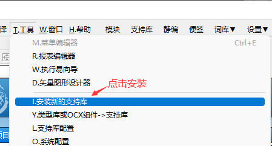
点击后会弹出支持库安装包管理工具，点击“安装支持库”就可以选择支持库安装文件进行安装。
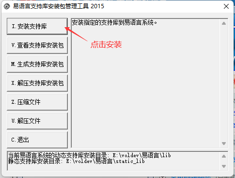
火山视窗演示：
易语言支持库在火山平台中名叫类库或模块，火山平台模块的后缀名为vcip，模块安装时火山平台会自动识别安装到视窗模块中还是安卓模块中，安装后将会出现在类库夹中。
模块安装方式如下：
双击模块文件即可安装。
也可以通过“工具->安装模块”进行模块安装。
2.3 支持库配置
易语言演示：
在易语言中支持库配置为全局配置，针对所有易语言项目有效。
点击“工具->支持库配置”。
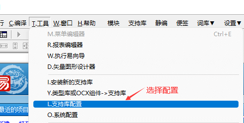
点击后会弹出支持库配置窗口，勾选所需要的支持库点击“确认”即可。
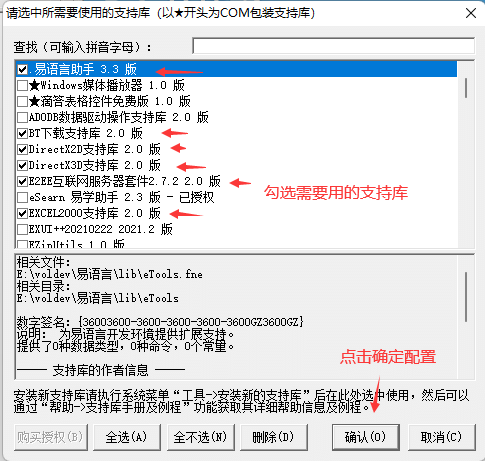
火山演示：
在火山中每个项目都可以独立配置进行模块(类库)配置，模块不可以跨平台配置，例如：视窗项目无法配置安卓模块。
模块配置方法如下：
(1) 右键项目配置
如果某项目想要配置模块，可通过右键此项目进行配置模块。
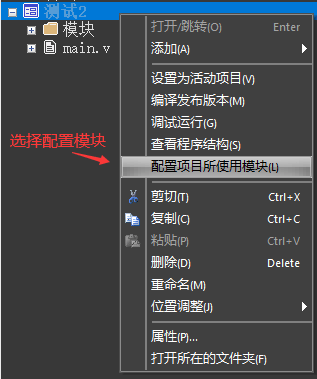
在弹出的模块配置窗口中，勾选要配置的模块点击“确定”即可。
注：如果想要删除某些模块，取消勾选即可。
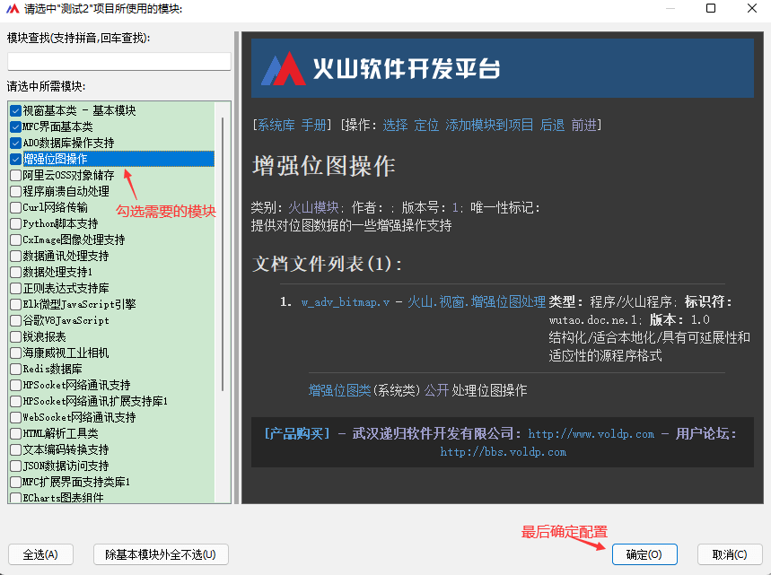
会提示正在添加哪些模块，确认无误后直接点击“确定”即可。
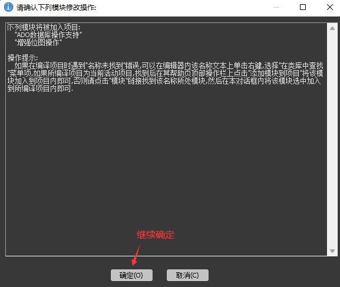
添加成功后，可在项目的“模块”分类下看到被添加的模块。
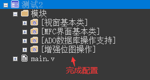
(2) 类库夹中右键配置
右键要配置的模块，选择“将此模块加入项目XX”，这里会自动选择当前活动项目进行模块配置。
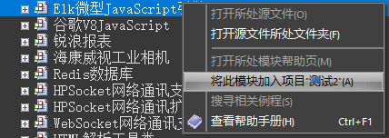
配置成功后可以在当前活动项目中看到此模块。
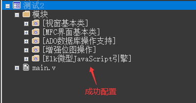
(3) 在帮助页中配置
例如：在进行类库功能搜索时，双击搜索结果打开帮助页，可以在帮助页中将此类所处的模块添加到当前活动项目中。
添加成功后可以在项目中看到此模块。
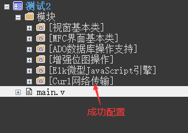
删除模块配置方法如下：
右键要删除的模块，选择“删除”即可。
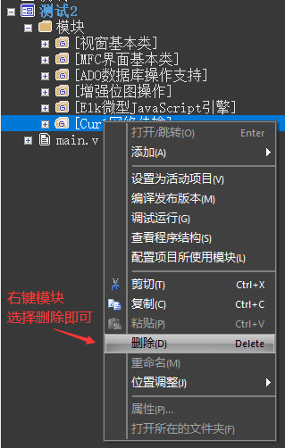
2.4 支持库卸载
易语言演示：
点击“工具->支持库配置”菜单，进入支持库管理窗口，选中要卸载的支持库，点击删除即可卸载。
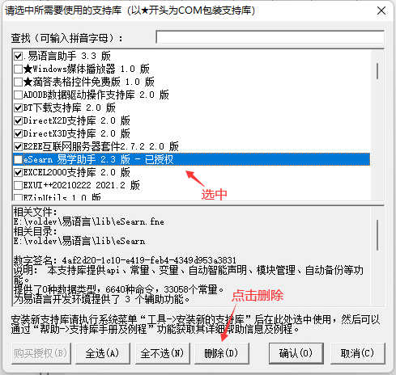
火山演示：
选择“工具-卸载模块”即可卸载第三方模块。
(1) 选择要卸载的平台。
(2) 勾选要卸载的模块，点击“卸载”即可。
2.5 支持库封装
易语言封装：
易语言支持库封装只能使用c、c++利用第三方c++开发工具来编写，比较复杂且需要非常熟悉c++。
火山视窗类库封装：
相对易语言来说，火山就简单很多。火山中的类库支持用火山源码文件来进行封装，可以通过嵌入c++代码也可以使用中文代码来封装。
创建部件DLL项目可以进行类库封装，具体看第4小节中的介绍。


3、模块差异
3.1 概述
易语言模块是易语言中非常重要的一个功能，用于程序功能分享，并且他人无法看到易模块源码。在火山中提供了“部件/部件DLL”用于实现类似易模块的功能。
解释如下：
名称 注释 部件 类似易模块，部件程序在分享后他人无法查看火山源码，但是在程序编译后可以看到输出的C++源码，安全性较差。
部件DLL 部件DLL为部件的升级版，编译部件DLL时，其关键代码会编译为DLL动态链接库，并自动生成火山接口文件。
相对于部件程序，部件DLL安全性是绝对有保证的，可广泛应用于多人协作或闭源项目中。
部件DLL在第4小节中单独进行介绍。
3.2 模块制作
易语言演示：
点击“程序->新建”菜单，可以创建易模块项目。
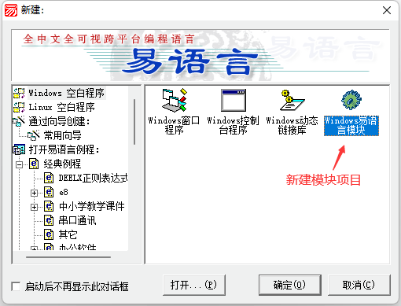
创建后编写一个易模块方法，需要公开后才可以被访问到。
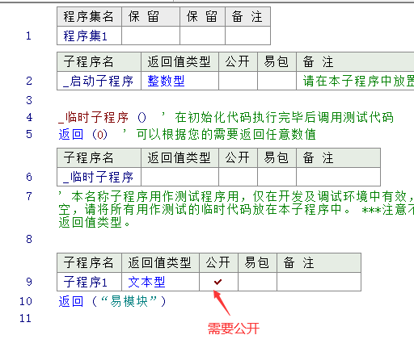
点击“程序->配置”菜单，可以配置易模块项目属性，除了程序名称必须提供外，其它的根据需求进行填写。
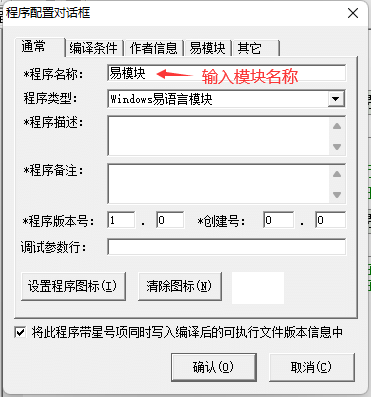
最后点击“编译->编译”菜单进行易模块编译即可，易模块后缀名为“.ec”。
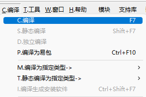
火山演示：
易语言模块在火山中名叫“部件”，随便新建一个项目都可以生成部件程序，相对易语言来说简单很多。
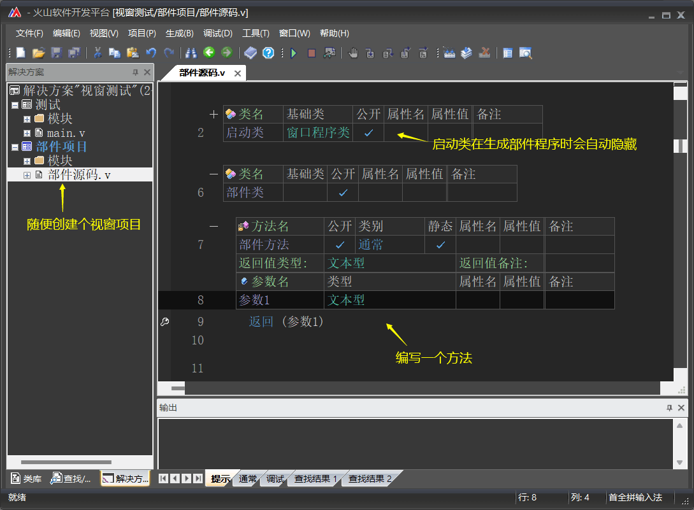
在项目中编写了方法后，右键要生成部件的文件，选择“生成部件程序”或者使用快捷键“Ctrl+Q”。
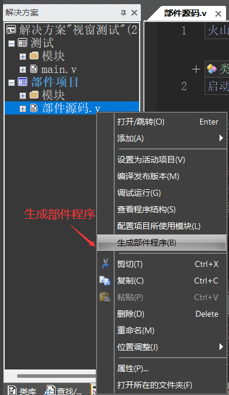
填写部件程序名称，点击保存即可。
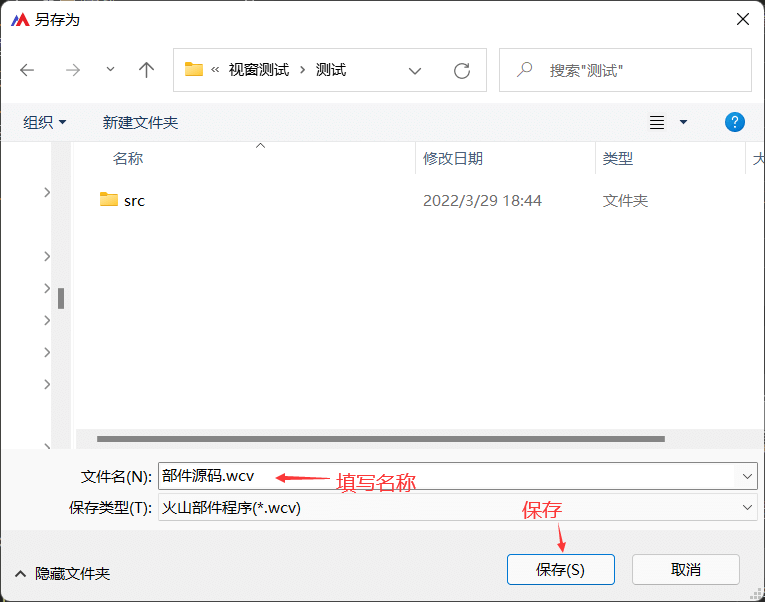
部件程序生成后会自动打开部件程序，可以看到部件程序中只能看到被公开的类和方法信息。
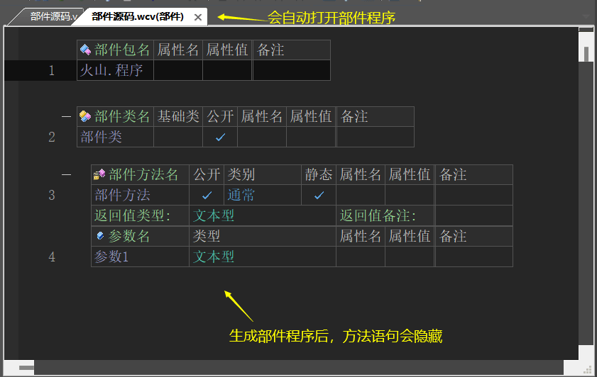
如果整个项目中的所有火山源文件都需要生成部件程序，可以点击“生成->生成项目部件程序”菜单进行操作。
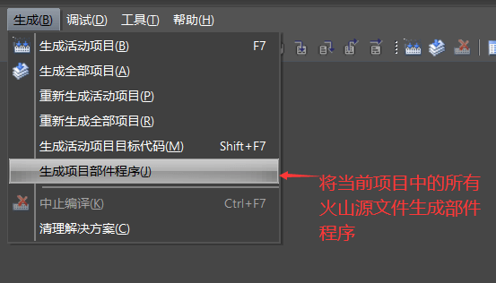
如果只需要特定的几个火山源文件生成布局程序可以按下“Ctrl”键进行多选，选择后生成。
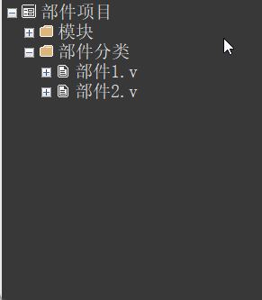
选中后右键点击生成。
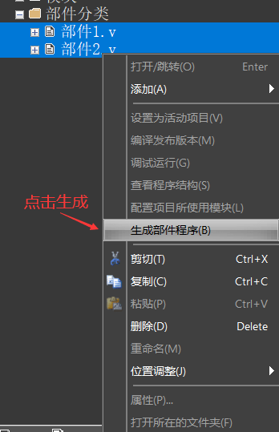
会弹出一个部件程序生成窗口，在此窗口中可以选择要生成的部件源码，也可以进行合并生成。
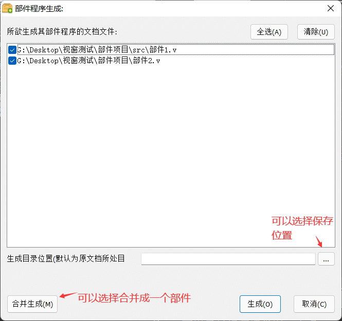
选择合并生成后，两个部件的代码会整合到一起。
注：合并生成务必保证其火山源码文件的包名一致。
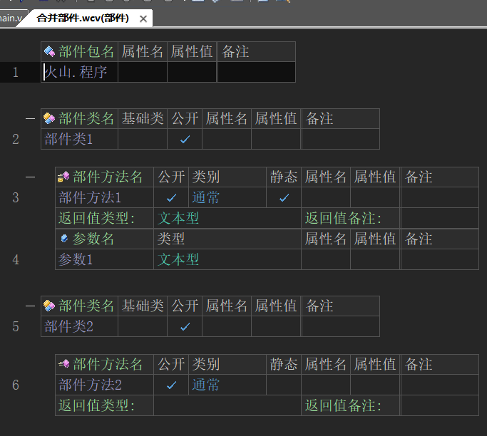
如果某筛选器下，所有的火山源码都需要生成部件，可以右键筛选器进行生成。
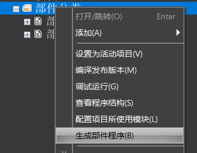
3.3 模块配置
易语言演示：
在易语言项目中，右键“模块引用表”选择“添加模块引用”即可进行模块配置。
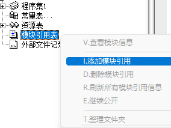
添加模块后如下图所示：
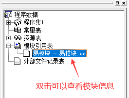
双击模块可以查看模块信息（未公开的子程序、变量、常量等不会显示）。
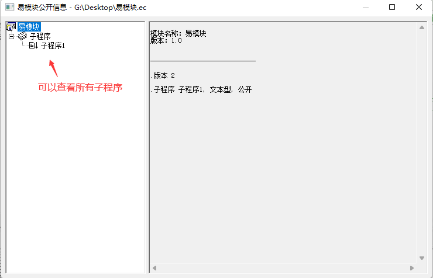
引用模块后就可以调用模块中公开的所有数据。
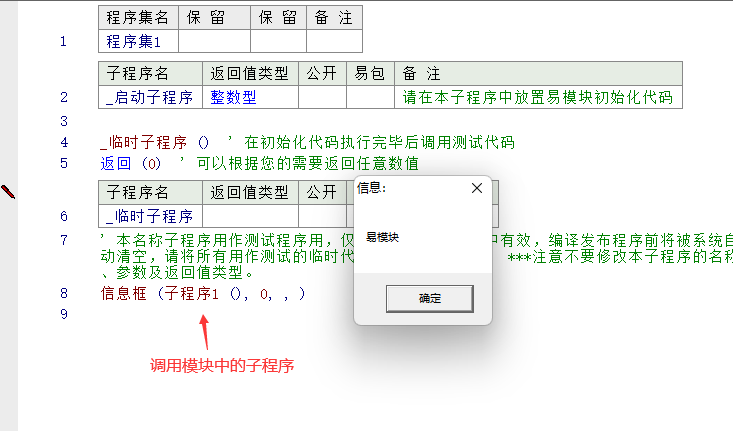
火山演示：
右键需要配置部件的项目，选择“添加->现有文件/模块”。
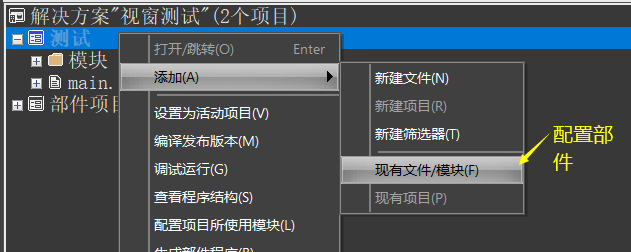
选择要配置的部件程序。
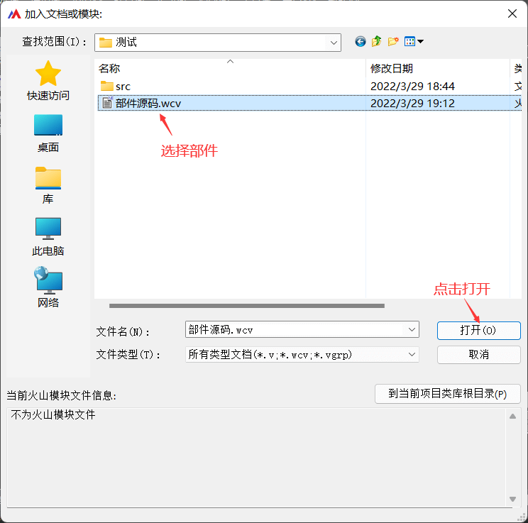
配置后效果如下：
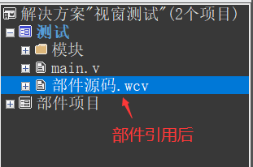
引用部件后就可以调用部件中公开的所有数据。
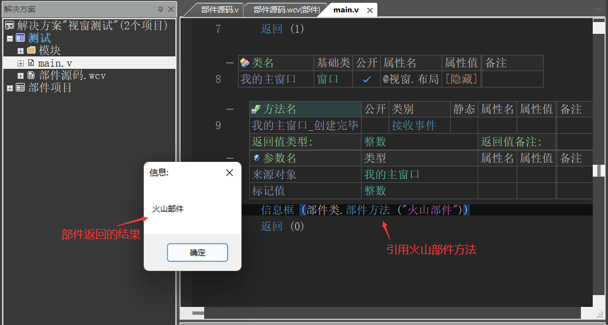
3.3 模块删除
易语言演示：
右键要删除的模块选择“删除模块引用”即可删除。
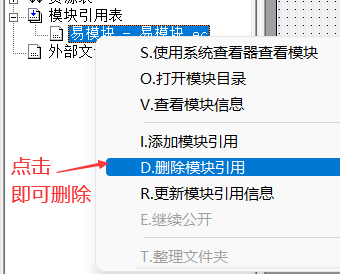
火山演示：
右键要删除的部件，选择“删除”即可。
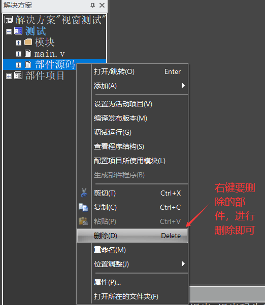
4、部件DLL
4.1 概述
“部件DLL动态链接库”和普通的“DLL动态链接库”没有本质的区别，都是动态链接库。只是前者在编译DLL时会自动生成其火山接口程序，方便他人使用其DLL中的功能，并且由于相关实现代码位于编译后的DLL中，因此安全性是绝对有保证的，可广泛应用于多人协作或闭源项目中。
同时系统在编译部件DLL程序时自动打包生成对应的火山模块，使用方将该模块安装到其火山系统中即可使用其中的功能。
部件DLL中的以下内容会被自动输出到所生成的接口程序中：
(1) 所有公开类及其中的公开成员常量和公开成员方法(不会包含具体功能实现代码)。
以下类不会被输出到所生成的接口程序中(即使满足前面的条件)：
(1) 系统类(其所处源文件位于当前所运行火山系统安装目录下的);
(2) 模板基础类,其所有模板实现类将被自动展开后输出;
(3) 启动类;
(4) 窗口组件类;
(5) 所有设置了值为假的“@输出到部件”属性的类(初级用户无需了解)。
以下方法不会被输出到所生成的接口程序中(即使满足前面的条件)：
(1) 嵌入式方法;
(2) 虚拟方法;
(3) 类的初始化和清理方法;
(4) 事件接收方法;
(5) 所有设置了值为假的“@输出到部件”属性的方法(初级用户无需了解)。
以下常量不会被输出到所生成的接口程序中(即使满足前面的条件)：
(1) 所有设置了值为假的“@输出到部件”属性的常量(初级用户无需了解).
系统在编译部件DLL程序时会自动处理该DLL程序中指定的所有附属文件(通过"视窗.附属文件"属性)，并会将其复制到所生成的接口数据目录中(部件DLL项目属性中可进行先关设置)。
4.2 项目创建
通过“文件->新建->项目”菜单，选择“部件动态链接库”进行项目创建。
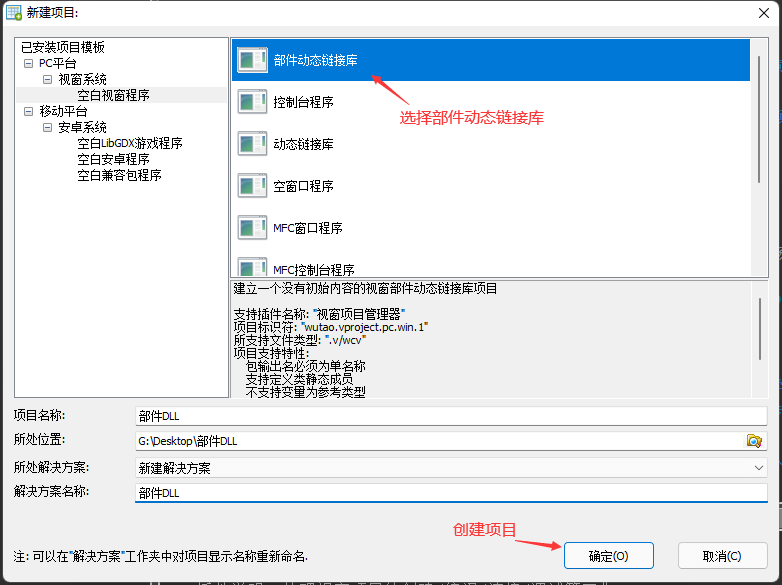
创建后会有一个启动类和一个自定义的输出类，其中启动类在编译部件时并不会输出到部件中展示。
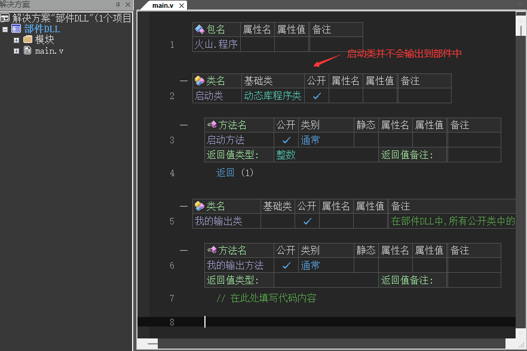
4.3 代码编写
定义一个测试类，用于测试部件程序输出情况。
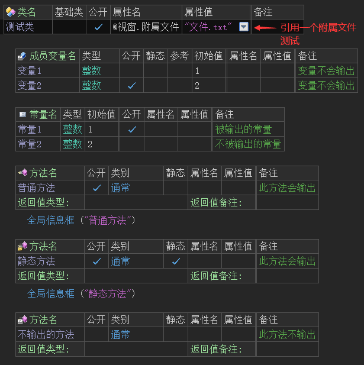
4.4 属性设置
使用快捷键“Alt + Enter”打开项目属性。
程序：
此分类下用于设置DLL程序信息，同时也会将其内容自动输出到火山模块配置文件中，用于打包模块使用。
编译：
务必将“编译结果类型”设置为“部件DLL动态链接库”否则将无法编译部件程序，其它设置根据需求调整。
部件DLL编译：
用于设置部件DLL的相关编译信息，通过“自动生成模块安装包”的设置项可以自动打包成火山模块供他人使用。
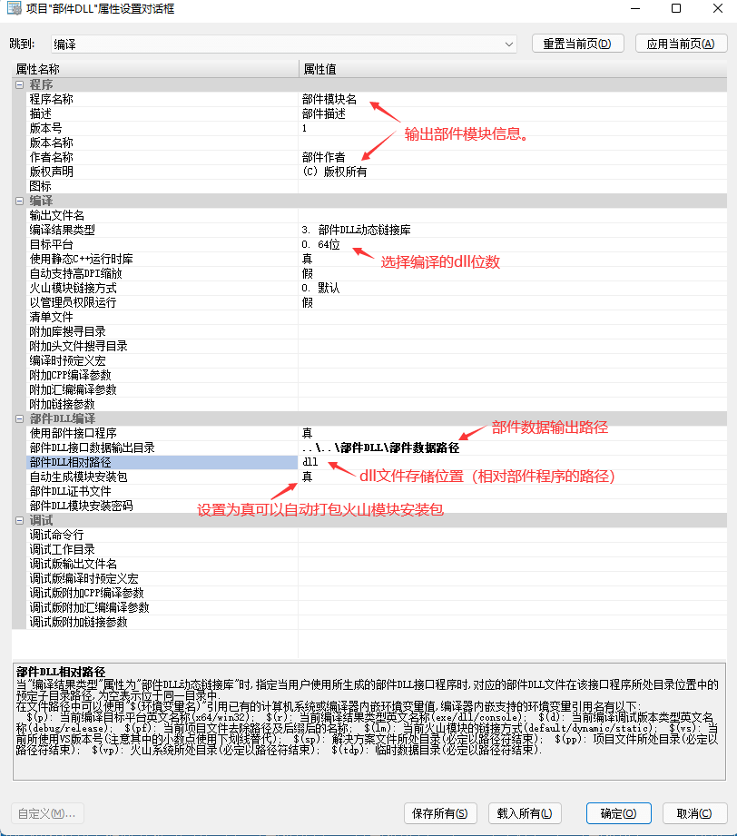
4.5 编译发布版
部件DLL编译与普通DLL编译流程一样，右键项目选择“编译发布版本”即可。
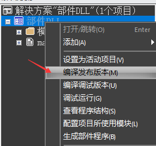
编译后会输出一些路径信息，其中有DLL输出路径、部件数据路径、模块安装包路径等。
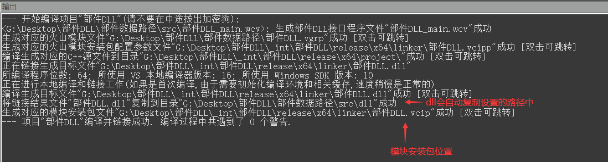
打开部件数据路径会看到火山模块配置文件，以及一个src文件夹，此文件夹内存储有部件程序文件和dll文件。
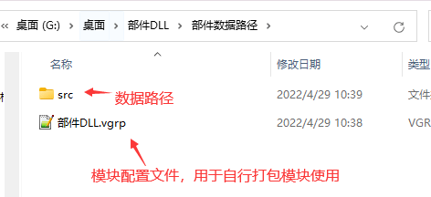
打开src路径会看到定义的dll文件夹和部件程序文件，在火山中引用部件程序就会自动调用dll中的内容，无需手动编写dll引用代码。
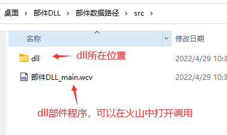
在dll文件夹中，除了存放有dll文件外，还存放有“@视窗.附属文件”所引用的附属文件。
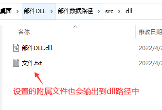
4.6 部件引用
(1) 引用部件和引用普通文件一致，右键项目选择“添加->现有文件/模块”即可。
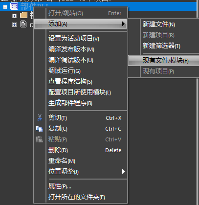
(2) 部件后缀名为wcv，选择要引用的部件文件即可。
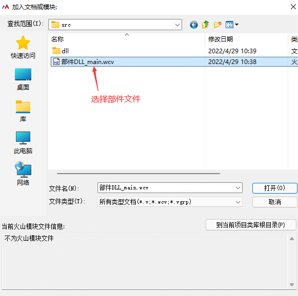
(3) 引用部件后双击可打开查看部件DLL接口，会发现变量和未公开的信息并不会输出到部件DLL接口中。
(4) 引用后就可以在程序中调用部件DLL中的方法。
(5) 部件DLL中的信息框被弹出。
4.7 部件模块
部件dll模块和普通模块使用方式一致，通过“工具->安装模块”菜单就可以进行模块安装。
关于火山模块安装引用卸载操作可以看“支持库差异”中的介绍。